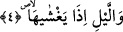
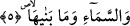

Ya da karanlığı, dünyayı veya yeryüzünü ortaya çıkarttığında gündüze, demektir.
Bunlar bilindiklerinden dolayı zikredilmemişlerdir.
Bu âyette güneşi ortaya çıkardığında ve zuhûrun son haddinde ibrâz ettiğinde rûhun
nurunun istilâ etmesine, gücünün ortaya çıkmasına ve nurunun yerleşmesine işâret
edilmektedir. Tıpkı güneşin parlaması hususunda istivâ vaktindeki gündüz gibi.
4. Onu örttüğünde geceye,
“Onu” güneşi “örttüğünde geceye.”
Gece, güneş ile gece karanlığının üzerine düştüğü şey arasına giren yeryüzünün
gölgesidir. Gece güneşin ışığını örter ve güneş kaybolur ve ufuklar kararır. Bizimle
güneşin arasına yeryüzünün girip güneşi perdelemesi geceleyin olduğundan, sanki gece
güneşi perdelemekte ve örtmektedir. Onun için örtme ve kapatma fiili geceye isnâd
edilmiştir.
Ya da âyet ‘ufukları ve yeryüzünü örttüğünde geceye’ demektir.
Herhalde âyette muzâri, şimdiki/geniş zaman siygasının mâziye tercih edilmiş olması,
Allah Teâlâ hakkında zamanın geçerli olmadığına delâlet etmek içindir. Allah katında
gelecek zaman geçmiş zaman gibidir. Elbette burada âyet sonlarındaki ses uyumuna da
riâyet edilmiş olmaktadır.
Âyette nefis gecesinin karanlığı ile ruh gündüzünü kapatmasına işâret vardır. Bu da
Allah’ın en büyük âyetlerinden/mûcizelerinden birisidir. Çünkü gece el-Mudill isminin
mazharıdır. Dolayısıyla el-Hâdî isminin mazharı olmasına nazaran gündüze yemin etmek
câiz olduğu gibi geceye yemin etmek de câiz olur.
5. Gökyüzüne ve onu bina edene,
Yani gökyüzünü son derece muazzam ve uçsuz bucaksız yaratana yemin ederim. Bu
yaratıcı Allah Teâlâ’dır.
Âyette “men” yerine “mâ” harfinin tercih edilmesi, yüceltmek için vasfiyet özelliğinin
irade edilmesinden dolayıdır. Çünkü “mâ” edatı ile akıllıların sıfatları sorulur. Âyette
sanki şöyle denilmiştir: Göğü binâ eden şânı büyük olan Kâdir’e yemin olsun.
Aynı açıklama gelecek olan âyet için de geçerlidir.